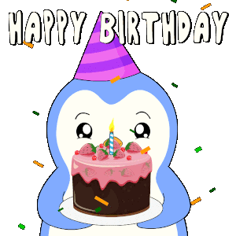
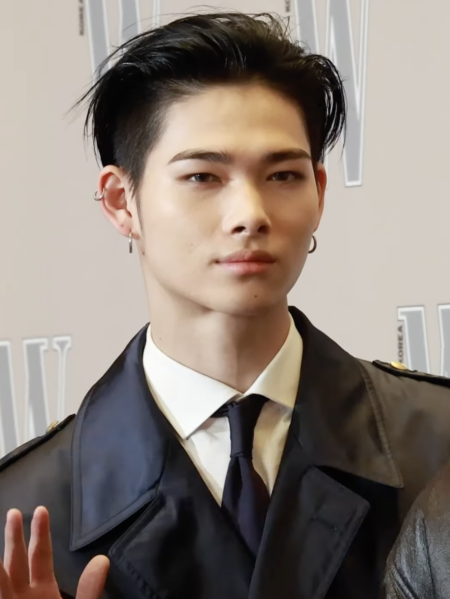
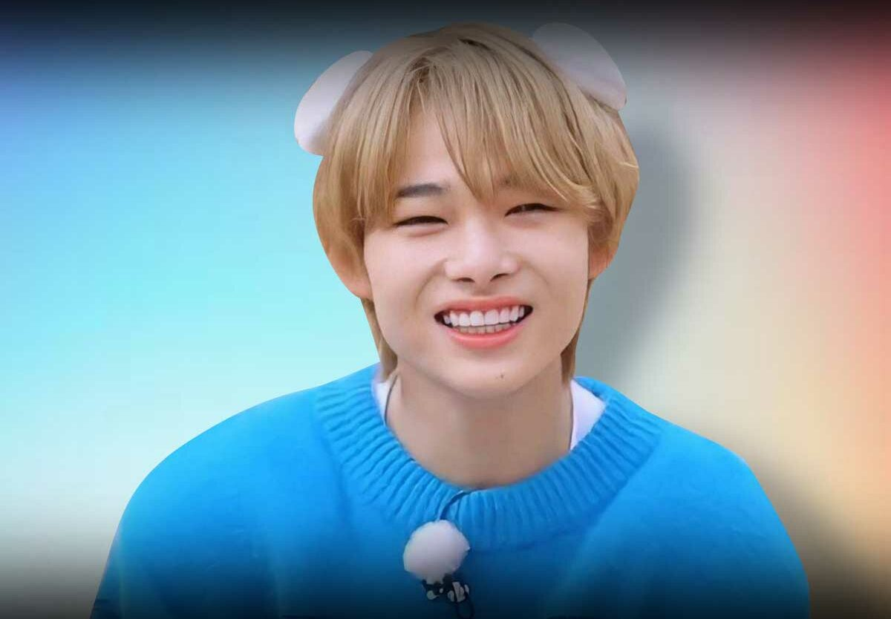
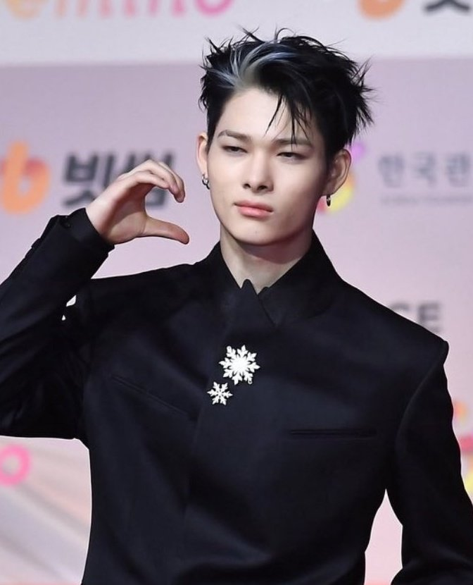
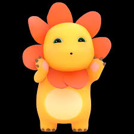

Happy 18th Birthday, AYA!🥑
Welcome to adult world! Ang wish ko lang sa iyo ay isang masayang buhay, maayos na kalusugan, at puno ng pagmamahal.
Sana tuloy-tuloy mo lang abutin lahat ng plano mo sa buhay. Alam kong marami ka pang gustong ma-achieve, at naniniwala ako na kaya mo ‘yon. Kahit na hindi ka natuloy dito sa Manila para mag college, I know naman ok ka lang d'yan at sa Iloilo. Step by the step lang, kahit ang iba ay hindi madali, alam ko naman na kakayanin mong malagpasan ang anumang pagsubok.
Sana rin ay okay ka palagi — hindi lang sa nakikita ng iba, kundi pati sa sarili mo. Kung may mga araw na nahihirapan ka, sana hindi mo makalimutan na malakas ka at may mga taong sumusuporta sa iyo.
Hindi man tayo tulad ng dati, gusto ko lang malaman mo na I am still rooting for you from afar. As I said before, I am your biggest fan of your life. Walang pressure, walang expectations — gusto ko lang na maging okay at masaya ka kung saan ka man mapunta.
Salamat sa lahat dahil naging part ka sa buhay ko. Hinding-hindi kita makakalimutan at lagi kitang ipagdadasal. Deserve mo ang lahat ng magagandang bagay sa mundo.
Happy 18th Birthday, Airabel M. Aspacio! Wishing you a day that reflects how truly special you are! :3
- Harold 🤟🏻